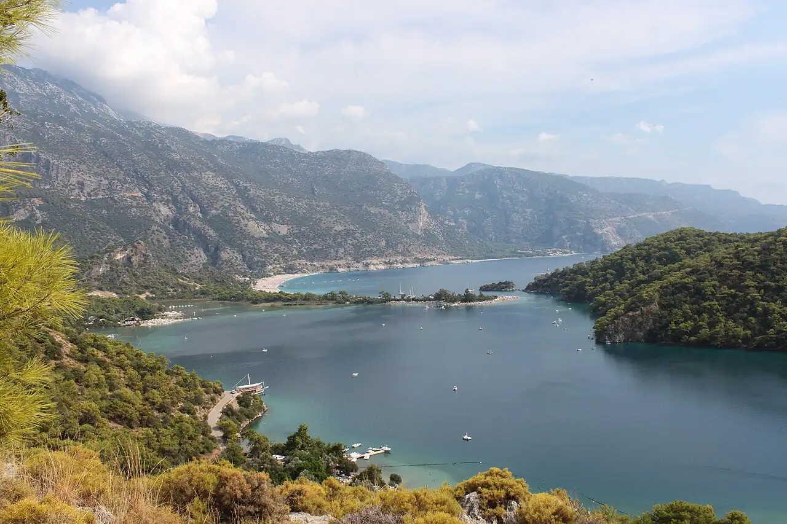

Ölüdeniz
Fethiye, Turquie · baignade, paddle, kayak

Lagon abrité au bord d’une plage de galets près de Fethiye, dominé par le mont Babadağ d’où décollent les parapentes. L’eau calme de la lagune se prête à la baignade et au paddle.
- Lieu
- Fethiye, Turquie
- Niveau
- Débutant
- Activités
- baignade, paddle, kayak
- Type d'eau
- Mer / océan
- Coordonnées
- 36.55, 29.11 (position approximative du secteur)
Dangers à connaître
- Parapentes en approche sur la plage : suis le balisage.
- Bateaux et engins nautiques nombreux côté mer ouverte.
Le conseil d'Ocean Buddy
La lagune est une zone protégée à l’entrée payante : viens tôt pour une eau calme et moins de monde.
Ouvrir dans Ocean Buddy Télécharger sur l'App Store
Source : Fiche Ocean Buddy · septembre 2026 · à vérifier localement.